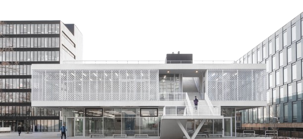
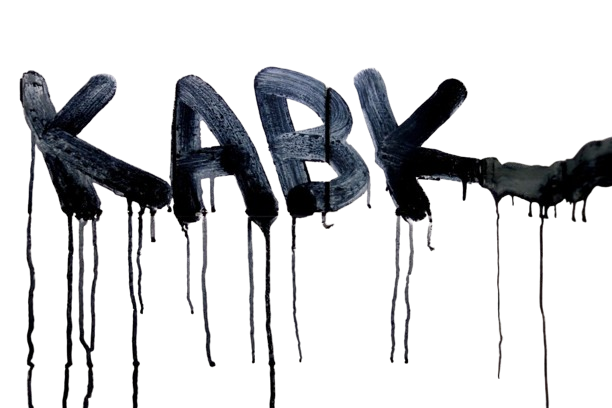
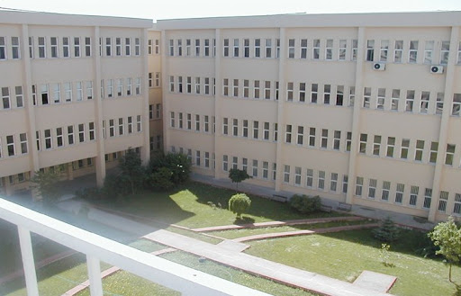

EXPERIENCE:
INVENTORS INITIATIVE (iii)/ PRODUCTION INTERN

NETHERLANDS, FEB - JUN 2023
🌹Working in a team for technical production of the events
ANKA MICROELECTRONICS / DESIGN AND VERIFICATION ENGINEER

TURKEY, AUG 2021 - MAR 2022
🌹SystemVerilog and UVM Training Certificate by ANKA
🌹Writing/Packing I2S Audio Communication Protocol Verification IP
🌹DO-254 standard for aviation safety and certification training
ASELSAN / HARDWARE DESIGN INTERNSHIP
TURKEY, JUN 2021
🌹Comprehensice VHDL
🌹UART Protocol & Design in VHDL and implementation on FPGA
SCIENTIFIC AND TECHNOLOGICAL RESEARCH COUNCIL OF TURKEY / RESEARCH SCHOLAR

TURKEY, FEB-JUL 2021
🌹MATLAB Data Analysis, Photoacoustic Tomography Algorithms, K-WAVE
🌹Working on developing a new image sharpness metric for enhancing PA Tomography
🌹Thesis Article "Hybrid Focusing Metric for Sound Speed Estimation in Photoacoustic Imaging Involving Layered Media"
EDUCATION:
SANDBERG INSTITUTE/ MASTER OF ARTS & DESIGN

NETHERLANDS, SEP 2023 - NOW
🌹Artificial Times / Sound and Algorithm Department
HOGESCHOOL DER KUNSTEN DEN HAAG/ BACHELOR OF ARTS

NETHERLANDS, AUG 2022 - AUG 2023
🌹ArtScience Department
ISTANBUL TECHNICAL UNIVERSITY/ BACHELOR OF SCIENCE

TURKEY, AUG 2016 - JUL 2021
🌹Electronics and Communication Engineering (in English)
🌹GPA: 3.67/4.0 (High Honor List)
🌹OCT 2018-JUN 2019 ERASMUS grant, AGH University of Science and Technology / POLAND